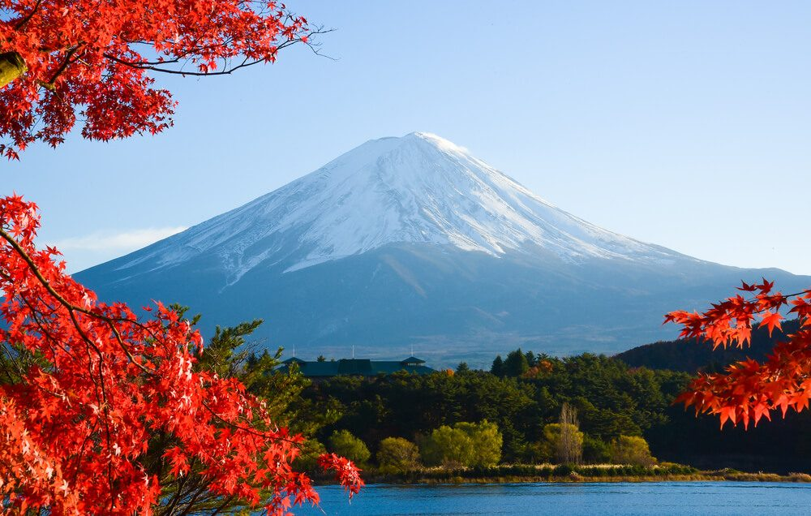
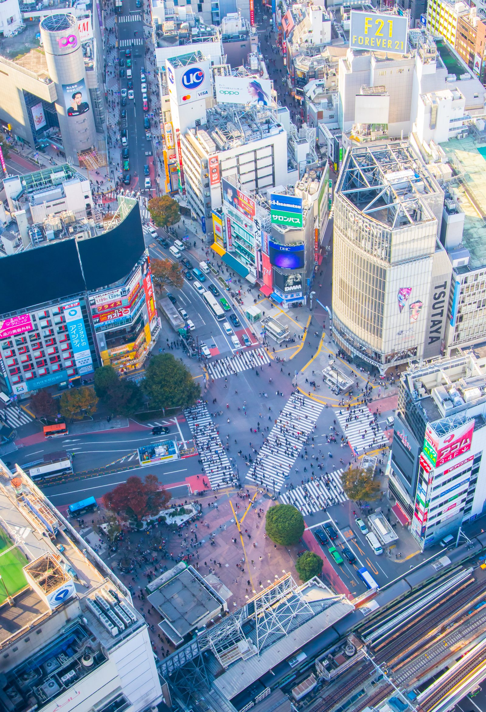
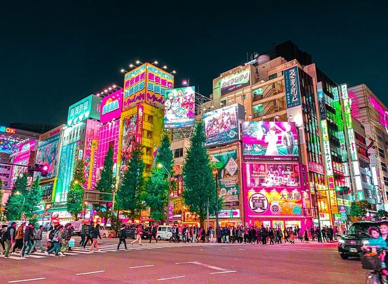
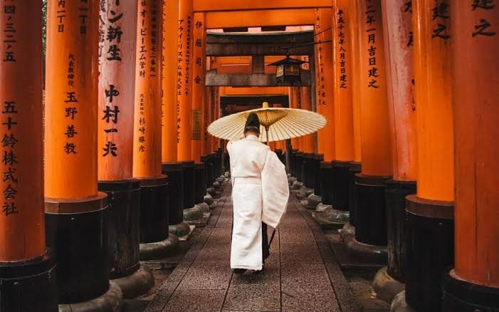
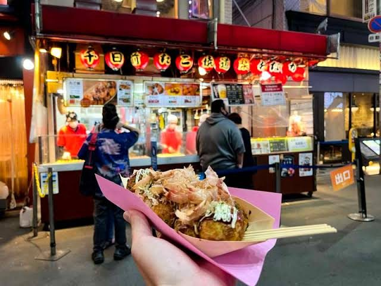
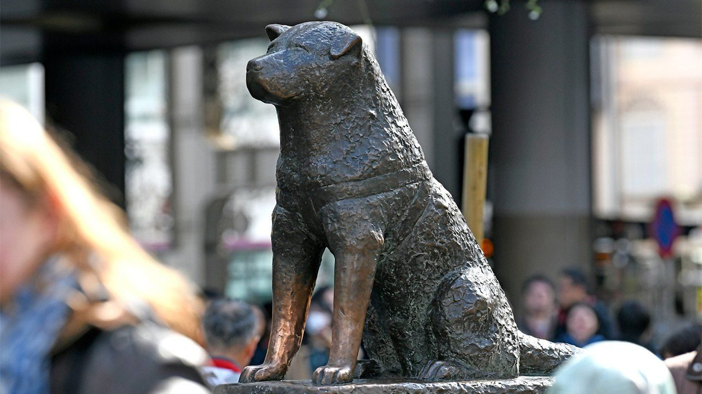

Hay algo esperándote. No hace falta que lo abras ahora — pero si quieres, ábrelo cuando estés lista.
Ratolín, llevamos tiempo hablando de esto, como una idea lejana, como algo que "algún día" haríamos.
Hoy ese día empieza a existir. No es un billete, no es un objeto — es una promesa con fecha.
Nos vamos juntos a:






Pero Japón queda para dentro de unos meses, y no quiero que esperes hasta entonces para tu primer regalo. Así que, mientras hacemos tiempo... ¿qué te parece si desconectamos de todo un par de días?